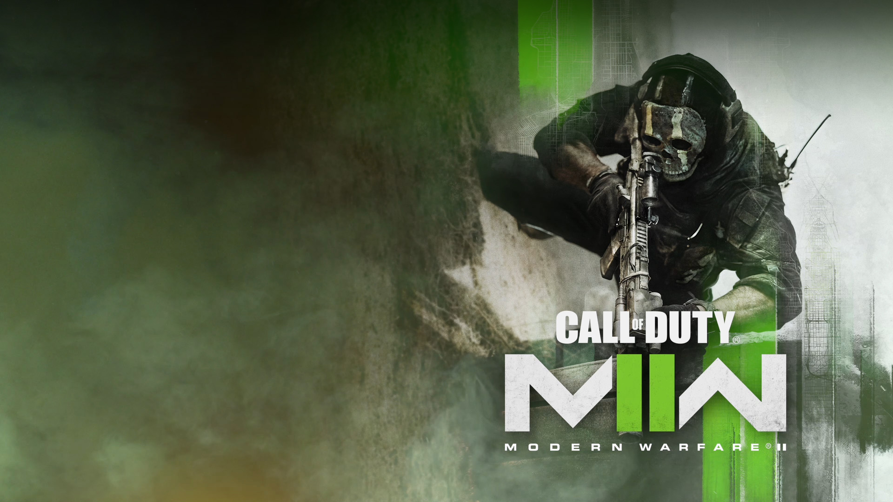

Call of Duty
From small-scale, high-stakes infiltration tactics to highly classified missions, players will need to leverage new weapons, vehicles, and cutting-edge equipment to take on their enemies. Gear up and take the fight offshore as you siege enemies underwater, breach a highly fortified enemy base, infil along the canals, and liberate much-needed allies at a black site hidden within the mountains.